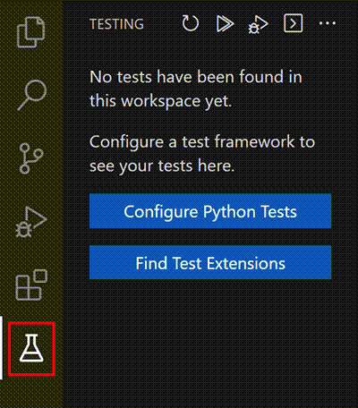
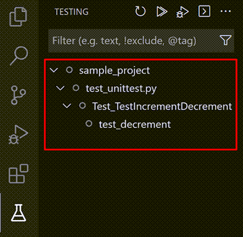
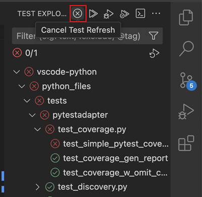
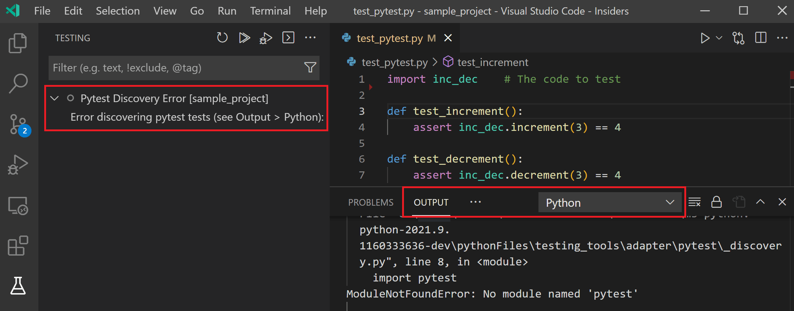
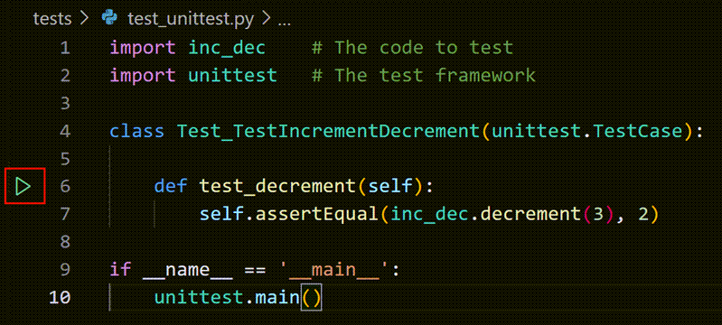
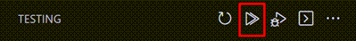
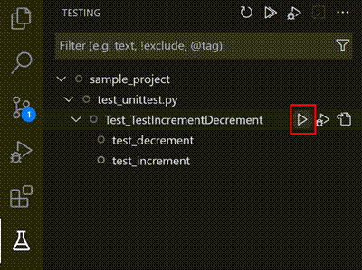
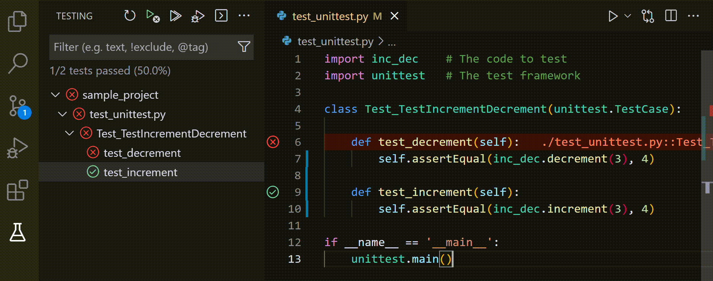
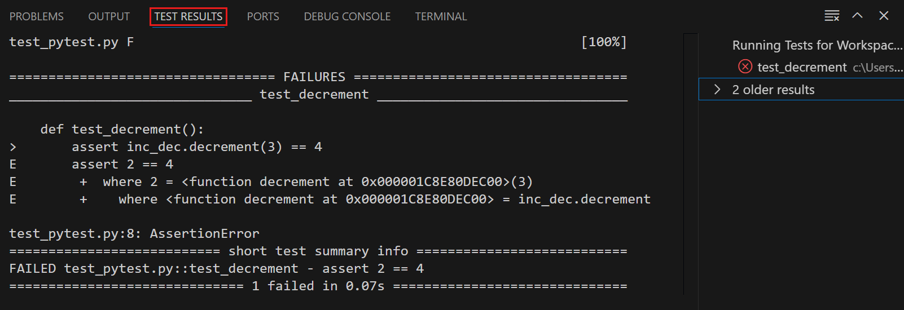

Visual Studio Code 中的 Python 测试
Python 扩展构建在 VS Code 的内置测试功能之上，提供测试发现、测试覆盖率，以及针对 Python 内置的 unittest 框架和 pytest 的测试运行和调试功能。
配置测试
当安装了 Python 扩展并在编辑器中打开 Python 文件时，VS Code 活动栏上会显示一个测试烧杯图标，代表测试资源管理器视图。如果尚未启用测试框架，打开测试资源管理器会显示配置 Python 测试按钮。选择配置 Python 测试将提示你选择一个测试框架和一个包含测试的文件夹。如果你使用 unittest，还需要选择用于识别测试文件的文件 glob 模式。
[!Note]
文件 glob 模式是一种定义的字符串模式，它基于通配符来匹配包含或不包含的文件或文件夹名称。

你可以随时通过命令面板使用 Python: 配置测试命令来配置测试，或者按照 VS Code 的设置文档所述，在设置编辑器或 settings.json 文件中将 python.testing.unittestEnabled 或 python.testing.pytestEnabled 设为启用。每个框架还针对其文件夹和模式有特定的配置设置，请参阅测试配置设置中的说明。
如果你启用了 pytest，而当前激活环境中尚未安装它，Python 扩展会尝试在后台安装它。此外，如果两个框架都已启用，Python 扩展只会运行 pytest。
[!Note]
Python 扩展支持的 pytest 最低版本为 7.0.0。
测试发现
默认情况下，一旦你启用了某个框架，Python 扩展就会尝试发现测试。你可以随时使用命令面板中的 Test: 刷新测试命令来触发测试发现。
[!Tip]
python.testing.autoTestDiscoverOnSaveEnabled默认设置为true，这意味着每当你添加、删除或更新工作区中的任何 Python 文件时，测试发现都会自动执行。要禁用此功能，请将该值设置为false，这可以在设置编辑器中或者按照 VS Code 的设置文档所述在settings.json文件中进行设置。你需要重新加载窗口才能使此设置生效。要更精细地控制自动测试发现中包含哪些文件，可以调整python.testing.autoTestDiscoverOnSavePattern设置，该设置默认为*/.py。
测试发现会应用当前框架的发现模式（可通过测试配置设置进行自定义）。默认行为如下：
python.testing.unittestArgs：在顶层项目文件夹中查找名称中包含 "test" 的任何 Python（.py）文件。所有测试文件都必须是可导入的模块或包。你可以使用-p配置设置来自定义文件匹配模式，并使用-t设置来自定义文件夹。python.testing.pytestArgs：查找名称以 "test\_" 开头或以 "\_test" 结尾的任何 Python（.py）文件，这些文件可以位于当前文件夹及其所有子文件夹中的任何位置。[!Tip]
有时，位于子文件夹中的测试因无法被导入而未被发现。要使它们可导入，可以在该文件夹中创建一个名为
__init__.py的空文件。
如果测试发现成功，你将在测试资源管理器中看到列出的测试：

直接从测试资源管理器触发测试发现时，你也可以取消正在进行的测试发现调用。使用取消按钮，该按钮在发现过程中会替换刷新按钮。

如果发现失败（例如，测试框架未安装或你的测试文件中存在语法错误），你将在测试资源管理器中看到一条错误消息，其中包含指向日志的链接。你可以查看 Python 输出面板以查看完整的错误消息（使用视图 > 输出菜单命令显示输出面板，然后从右侧的下拉菜单中选择 Python）。

运行测试
你可以使用以下任一操作来运行测试：
- 打开测试文件后，选择测试定义行旁边的装订线中显示的绿色运行图标，如上节所示。此命令仅运行那一个方法。

- 从命令面板运行以下任一命令：
- Test: 运行所有测试 - 运行所有已发现的测试。
- Test: 运行当前文件中的测试 - 运行编辑器中打开的某个文件中的所有测试。
- Test: 运行光标处的测试 - 仅运行编辑器中光标所在的测试方法。
- 从测试资源管理器中：
- 要运行所有已发现的测试，请选择测试资源管理器顶部的播放按钮：

- 要运行一组特定的测试或单个测试，请选择文件、类或测试，然后选择该项右侧的播放按钮：

- 你还可以通过测试资源管理器运行所选的一部分测试。方法是：
kbstyle(Ctrl+Click)（macOS 上为kbstyle(Cmd+Click)）选择你想运行的测试，右键单击其中一项，然后选择运行测试。
测试运行后，VS Code 会直接在编辑器中以装订线装饰的形式显示结果。失败的测试也会在编辑器中高亮显示，并附带一个速览视图，其中显示测试运行的错误消息以及所有测试运行的历史记录。你可以按 kbstyle(Escape) 来关闭该视图，也可以通过打开用户设置（命令面板中的 Preferences: Open Settings (UI) 命令）并将 Testing: Automatically Open Peek View 设置的值更改为 never 来禁用它。
在测试资源管理器中，结果显示为单个测试以及包含这些测试的任何类和文件。如果文件夹中的任何测试未通过，该文件夹将显示失败图标。

VS Code 还会在测试结果面板中显示测试结果。

带覆盖率运行测试
要启用覆盖率运行测试，请选择测试资源管理器中的覆盖率运行图标，或从你通常触发测试运行的任何菜单中选择带覆盖率运行选项。如果你使用的是 pytest，Python 扩展会使用 pytest-cov 插件来运行覆盖率；如果使用 unittest，则使用 coverage.py。
[!Note]
在带覆盖率运行测试之前，请确保为你的项目安装了正确的测试覆盖率包。
分支覆盖率仅在 coverage 版本 >= 7.7 上受支持。
覆盖率运行完成后，编辑器中会高亮显示代码行级别的覆盖率。测试覆盖率结果显示为测试资源管理器中的一个 "Test Coverage" 子选项卡，你还可以使用命令面板中的 Testing: Focus on Test Coverage View（kb(workbench.action.showCommands)）导航到该选项卡。在此面板上，你可以查看工作区中每个文件和文件夹的行覆盖率指标，以及分支覆盖率（如果适用）。

要在使用 pytest 时更精细地控制覆盖率运行，你可以编辑 python.testing.pytestArgs 设置来包含你的规格说明。当 pytest 参数 --cov 存在于 python.testing.pytestArgs 中时，Python 扩展不会对覆盖率参数进行任何额外的修改，以便你的自定义设置生效。如果未找到 --cov 参数，扩展将在运行前向 pytest 参数中添加 --cov=.，以在工作区根目录启用覆盖率。
有关测试覆盖率的更多信息，请访问 VS Code 的测试覆盖率文档。
调试测试
要调试测试，请右键单击函数定义旁边的装订线装饰，然后选择调试测试，或在测试资源管理器中选择该测试旁边的调试测试图标。
[!Note]
运行或调试测试不会自动保存测试文件。在运行测试之前，请务必确保保存对测试的更改，否则你很可能会对结果感到困惑，因为结果仍然反映的是文件的先前版本！
你可以使用命令面板中的以下命令来调试测试：
- Test: 调试所有测试 - 启动调试器以调试工作区中的所有测试。
- Test: 调试当前文件中的测试 - 启动调试器以调试编辑器中打开的文件中定义的测试。
- Test: 调试光标处的测试 - 仅启动调试器以调试编辑器中光标所在的方法。你也可以使用测试资源管理器中的调试测试图标，来为所选范围内的所有测试和所有已发现的测试启动调试器。
你还可以更改单击装订线装饰的默认行为，使其调试测试而非运行测试，方法是将 settings.json 文件中的 testing.defaultGutterClickAction 设置值更改为 debug。
调试器对测试的工作原理与其他 Python 代码相同，包括断点、变量检查等。要自定义调试测试的设置，你可以在工作区 .vscode 文件夹中的 launch.json 或 settings.json 文件中，通过将 "purpose": ["debug-test"] 添加到你的配置中来指定测试调试配置。当你运行 Test: 调试所有测试、Test: 调试当前文件中的测试和 Test: 调试光标处的测试命令时，将使用此配置。
例如，launch.json 文件中以下的配置禁用了调试测试的 justMyCode 设置：
{
"name": "Python: Debug Tests",
"type": "debugpy",
"request": "launch",
"program": "${file}",
"purpose": ["debug-test"],
"console": "integratedTerminal",
"justMyCode": false
}如果你有多个配置条目包含 "purpose": ["debug-test"]，将使用第一个定义，因为我们目前不支持此请求类型的多个定义。
有关调试的更多信息或了解它在 VS Code 中的工作原理，请阅读 Python 调试配置和一般的 VS Code 调试文章。
并行运行测试
通过 pytest-xdist 包，可以使用 pytest 并行运行测试。请访问它们的文档，了解有关如何使用 pytest-xdist 的更多信息。
当启用 xdist 且参数中未指定工作线程数量时，Python 扩展会根据测试资源管理器中选中的测试数量自动优化工作线程的数量。
Django 单元测试
Python 扩展还支持发现和运行 Django 单元测试！只需几个额外的设置步骤，你就可以发现 Django 测试：
- 在你的
settings.json文件中设置"python.testing.unittestEnabled": true,。 - 将
MANAGE_PY_PATH添加为环境变量：- 在项目根目录创建一个
.env文件。- 将
MANAGE_PY_PATH='添加到' .env文件中，将manage.py文件的路径。提示：你可以在资源管理器视图中右键单击该文件并选择复制路径来复制路径。
- 将
- 在项目根目录创建一个
- 根据需要，在
settings.json文件中将 Django 测试参数添加到"python.testing.unittestArgs": []，并删除所有与 Django 不兼容的参数。[!Note]
默认情况下，Python 扩展会在项目根目录查找并加载
.env文件。如果你的.env文件不在项目根目录，或者你正在使用 VS Code 变量替换，请将"python.envFile": "${workspaceFolder}/添加到你的" settings.json文件中。这使 Python 扩展在运行和发现测试时能够从该文件加载环境变量。获取更多关于 Python 环境变量的信息。
导航到测试视图，选择刷新测试按钮即可显示你的 Django 测试！
故障排除
如果你的 Django 单元测试未显示在测试视图中，请尝试以下故障排除步骤：
- 在 Python 输出面板中搜索错误消息。它们可能提供有关测试未被发现的原因的提示。
- 尝试在终端中运行 Django 测试。然后将相同的命令"翻译"为 VS Code 设置。
例如，如果你在终端中运行 python manage.py test --arg，你需要在 .env 文件中添加 MANAGE_PY_PATH='./manage.py'，并在 VS Code 设置中设置 "python.testing.unittestArgs": [--arg]。或者，你也可以在 Python 输出面板中找到 Python 扩展运行的命令。
- 如果你最初使用的是相对路径，请在设置
MANAGE_PY_PATH环境变量时使用manage.py文件的绝对路径。测试命令
以下是 VS Code 中 Python 扩展支持的所有测试命令。这些都可以通过命令面板找到：
| 命令名称 | 说明 | ||
|---|---|---|---|
| ------------ | ------------ | ||
| Python: Configure Tests | 配置用于 Python 扩展的测试框架。 | ||
| Test: Clear All Results | 清除所有测试状态，因为界面会跨会话保持测试结果。 | ||
| Test: Debug All Tests | 调试所有已发现的测试。等效于 2021.9 之前版本的 Python: Debug All Tests。 | ||
| Test: Debug Failed Tests | 调试最近一次测试运行中失败的测试。 | ||
| Test: Debug Last Run | 调试最近一次测试运行中执行的测试。 | ||
| Test: Debug Test at Cursor | 调试编辑器中光标所在的测试方法。类似于 2021.9 之前版本的 Python: Debug Test Method...。 | ||
| Test: Debug Tests in Current File | 调试编辑器中当前获得焦点的文件中的测试。 | ||
| Test: Go to Next Test Failure | 如果错误速览视图已打开，打开并移动到资源管理器中下一个失败的测试的速览视图。 | ||
| Test: Go to Previous Test Failure | 如果错误速览视图已打开，打开并移动到资源管理器中上一个失败的测试的速览视图。 | ||
| Test: Peek Output | 打开失败测试方法的错误速览视图。 | ||
| Test: Refresh Tests | 执行测试发现并更新测试资源管理器以反映任何测试更改、添加或删除。类似于 2021.9 之前版本的 Python: Discover Tests。 | ||
| Test: Rerun Failed Tests | 运行最近一次测试运行中失败的测试。类似于 2021.9 之前版本的 Python: Run Failed Tests。 | ||
| Test: Rerun Last Run | 调试最近一次测试运行中执行的测试。 | ||
| Test: Run All Tests | 运行所有已发现的测试。等效于 2021.9 之前版本的 Python: Run All Tests。 | ||
| Test: Run All Tests with Coverage | 运行所有已发现的测试并计算你的测试覆盖了多少代码。 | ||
| Test: Run Test at Cursor | 运行编辑器中光标所在的测试方法。类似于 2021.9 之前版本的 Python: Run Test Method...。 | ||
| Test: Run Test in Current File | 运行编辑器中当前获得焦点的文件中的测试。等效于 2021.9 之前版本的 Python: Run Current Test File。 | ||
| Test: Show Output | 打开包含所有测试运行详细信息的输出。类似于 2021.9 之前版本的 Python: Show Test Output。 | ||
| Testing: Focus on Test Explorer View | 打开测试资源管理器视图。类似于 2021.9 之前版本的 Testing: Focus on Python View。 | ||
| Test: Stop Refreshing Tests | 取消测试发现。 |
测试配置设置
Python 测试的行为由 VS Code 提供的通用界面设置以及特定于 Python 和你所启用框架的设置来驱动。
通用界面设置
影响测试功能界面的设置由 VS Code 自身提供，可以在 VS Code 设置编辑器中搜索 "Testing" 找到。
通用 Python 设置
| 设置 (python.testing.) | 默认值 | 说明 | ||
|---|---|---|---|---|
| --- | --- | --- | ||
| autoTestDiscoverOnSaveEnabled | true | 指定保存测试文件时是否启用或禁用自动运行测试发现。更改此设置后，可能需要重新加载窗口才能使其生效。 | ||
| cwd | null | 指定测试的可选工作目录。此设置的存在会动态调整 pytest 的 --rootdir 参数。 | ||
| autoTestDiscoverOnSavePattern | */.py | 指定一个 glob 模式，用于确定当 autoTestDiscoverOnSaveEnabled 为 true 时，哪些文件更改会触发自动测试发现。 | ||
| debugPort | 3000 | 用于调试 unittest 测试的端口号。 | ||
| promptToConfigure | true | 指定如果发现潜在的测试，VS Code 是否提示你配置测试框架。 |
unittest 配置设置
| Unittest 设置 (python.testing.) | 默认值 | 说明 | ||
|---|---|---|---|---|
| --- | --- | --- | ||
| unittestEnabled | false | 指定是否启用 unittest 作为测试框架。pytest 的等效设置应当禁用。 | ||
| unittestArgs | ["-v", "-s", ".", "-p", "test.py"] | 传递给 unittest 的参数，其中每个以空格分隔的元素都是列表中的一个单独项。默认值的说明见下文。 |
unittest 的默认参数如下：
-v设置默认详细程度。移除此参数可获得更简洁的输出。-s .指定发现测试的起始目录。如果你的测试位于 "test" 文件夹中，请将该参数改为-s test（即参数数组中的"-s", "test"）。-p test.py是用于查找测试的发现模式。在此例中，它匹配任何包含单词 "test" 的.py文件。如果你以不同方式命名测试文件，例如在每个文件名后追加 "\_test"，则使用类似*_test.py的模式作为数组中的相应参数。
要在第一次失败时停止测试运行，请在参数数组中添加快速失败选项 "-f"。
请参阅 unittest 命令行接口以获取所有可用选项的完整集合。
pytest 配置设置
| pytest 设置 (python.testing.) | 默认值 | 说明 | ||
|---|---|---|---|---|
| --- | --- | --- | ||
| pytestEnabled | false | 指定是否启用 pytest 作为测试框架。unittest 的等效设置应当禁用。 | ||
| pytestPath | "pytest" | pytest 的路径。如果 pytest 位于当前环境之外，请使用完整路径。 | ||
| pytestArgs | [] | 传递给 pytest 的参数，其中每个以空格分隔的元素都是列表中的一个单独项。请参阅 pytest 命令行选项。 |
pytest 的默认参数如下：
rootdir会根据工作区中是否存在python.testing.cwd设置而动态调整。
你还可以按照 pytest 配置中所述，使用 pytest.ini 文件来配置 pytest。
[!Note]
如果你安装了 pytest-cov 覆盖率模块，VS Code 在调试时不会在断点处停止，因为 pytest-cov 使用了相同的技术来访问正在运行的源代码。要防止此行为，请在调试测试时在pytestArgs中包含--no-cov，例如通过在调试配置中添加"env": {"PYTEST_ADDOPTS": "--no-cov"}。（有关如何设置该启动配置，请参阅上文的调试测试。）（有关更多信息，请参阅 pytest-cov 文档中的调试器和 PyCharm。）
IntelliSense 设置
| IntelliSense 设置 (python.analysis.) | 默认值 | 说明 | ||
|---|---|---|---|---|
| --- | --- | --- | ||
| inlayHints.pytestParameters | false | 是否显示 pytest 夹具参数类型的内联提示。可接受的值为 true 或 false。 |